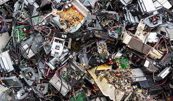

IMPORTANCES
HOME
GOOD PRACTICES TYPES & EXAMPLES
GALLERY

-
It’s critical to keep electronic waste out of landfills. The
EPA has stated that e-waste is dangerous when improperly disposed of.
Electronic devices are comprised of toxic substances and heavy metals.
Materials such as chromium, cadmium, mercury and lead can leach into the
soil contaminating the air and waterways. EPA estimates there are about 60
million tons of e-waste per year globally. Recycling this material will
save landfill space. For these reasons, there are numerous state laws that
now ban e-waste in landfills.
-
Electronic products are comprised of valuable materials such as precious
metals like gold, silver and platinum along with copper, aluminum, plastic
and glass. Through the recycling process, these materials can be
reclaimed. Most electronic devices are nearly 100 percent recyclable. It
would be poor stewardship to landfill these materials.
-
Reclaiming valuable materials from the recycling process means there will be
decreased demand for new raw materials. This will help conserve
important natural resources. According to the EPA, one metric ton of
circuit boards contains 800 times the amount of gold mined from one metric
ton of ore.
-
Using recycled material will also help reduce greenhouse gas emissions
produced when manufacturing or processing new product known as “virgin
material.” The more recycled material is available,
the lower the demand for virgin material.
-
Discarded electronic devices can also be kept out of the landfill if they
are refurbished, reused and donated to a worthy cause. A
quick Google search will provide a list of organizations in most areas that
rebuild old electronics and provide them to those who otherwise would go
without. “Reuse” is an important component of keeping material out of the
waste stream. The EPA’s webpage has a listing of donation programs, at:
epa.gov/recycle/electronics-donation-andrecycling#where